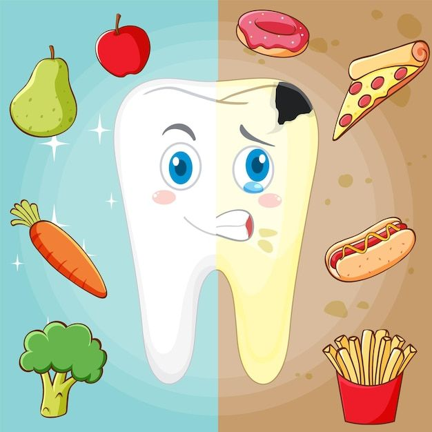

Bienvenidos
La boca contiene millones de microorganismos. Algunos son beneficiosos para nuestro organismo, mientras que otros pueden provocar enfermedades cuando no mantenemos una correcta higiene bucal.
En este recurso aprenderemos cuáles son las principales enfermedades bucales agudas, cómo se producen y qué hábitos ayudan a prevenirlas.
Objetivos
* Reconocer distintos microorganismos presentes en la boca.
* Identificar enfermedades bucales agudas.
* Comprender formas de prevención e higiene.
* Promover hábitos saludables.
